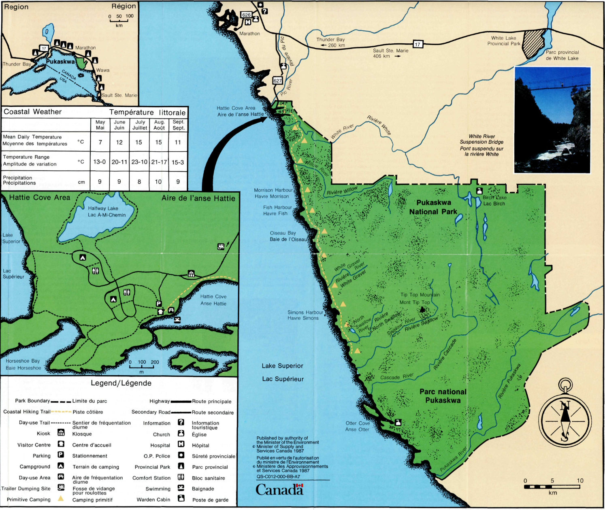
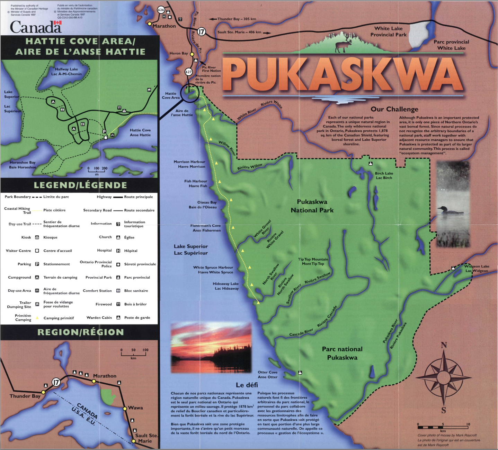
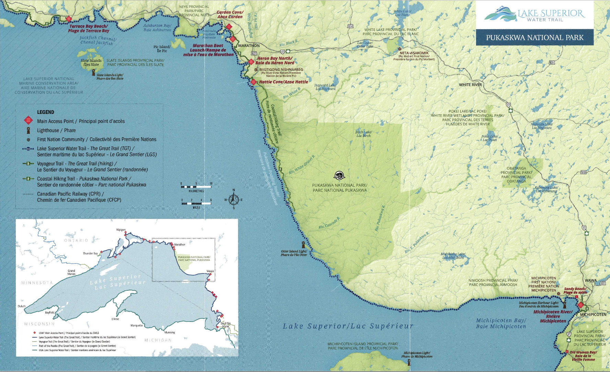

Pukaskwa National Park was established in 1978. It is located on the western coastline of Lake Superior in Ontario and spans around 1877.8 km2 of land. Its terrain consists on beaches, headlands, and rocky coastlines.

Ontario
Pukaskwa National Park was established in 1978. It is located on the western coastline of Lake Superior in Ontario and spans around 1877.8 km2 of land. Its terrain consists on beaches, headlands, and rocky coastlines.
What's cool about these ones is that you can tell they were meant to be printed and yes, obviously most maps before 1990 were meant to be printed but it's cool to see how things were designed when they didn't need to compatible for print and for the web.

1987

1997
In the same vein as my last comment, these maps although they were inevitebly printed for tangible use, it is clear they were also made for web use. More detail and contrast for the purpose of zooming and legibility at all sizes makes it more functional in a variety of spaces. I do appreciate the integration of more vibrant colours while being colour accurate.

2010

2025